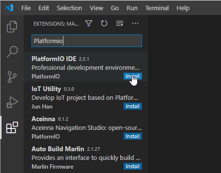

Compiling
Clone from GitHub~
Make sure to add the --recursive parameter when cloning the project from GitHub. Otherwise git will not download the required submodules in the /lib subdirectory.
git clone --recursive https://github.com/fvanroie/hasp-lvgl
If you already cloned hasp-lvgl without the submodules, you can fetch the submodules seperately using:
git submodule update --init --recursive
To switch to a different branch use:
git clone --recursive https://github.com/fvanroie/hasp-lvgl
cd hasp-lvgl
git checkout 0.2.0
git submodule update --init --recursive
Open in PlatformIO~

Open the project folder in Visual Studio Code, make sure you have the PlatformIO IDE extension installed. This will automatically install all PlatformIO dependencies and the compiler frameworks needed.
Restart Visual Studio Code when the PIO installation completes.
Create a configuration~
Copy platformio_override-template.ini to platformio_override.ini and uncomment the platforms for esp32and esp8266:
[platformio]
extra_configs =
; Uncomment or edit the lines to show more User Setups in the PIO sidebar
user_setups/esp32/*.ini
user_setups/esp8266/*.ini
; user_setups/stm32f4xx/*.ini
Then Click on the "Refresh Project tasks" icon in PlatformIO to list all the configured environments.
Compile Environment~

You can now run "Build" or "Build All" in PlatformIO to compile (all) the firmware.
Development~
Block Diagram~